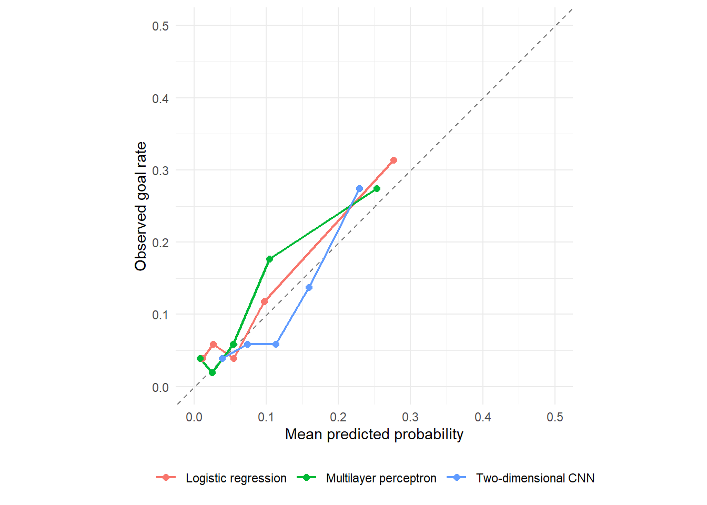
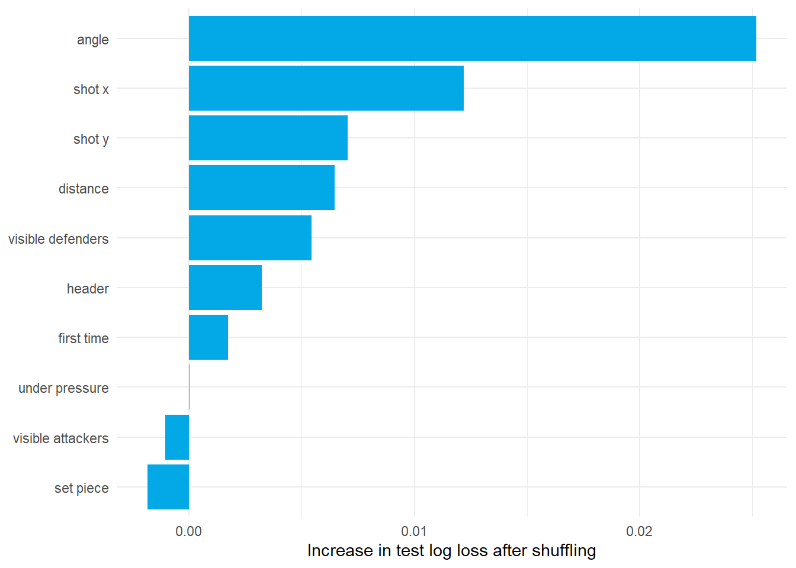
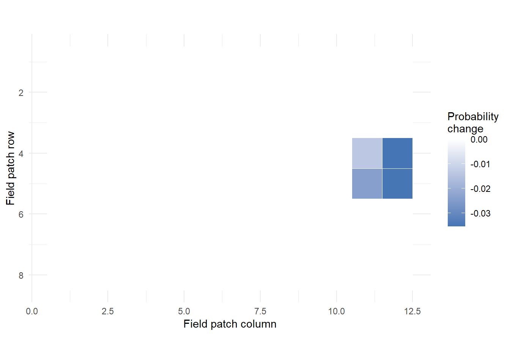

model$eval() # Disable dropout; keep fitted weights fixed
probability <- with_no_grad({ # No gradient recording during evaluation
logits <- model(x_test) # One logit per test shot
as.numeric(as_array(torch_sigmoid(logits))) # Return an ordinary R vector
})
# observed holds the matching 0/1 test outcomes; these are course metric helpers.
binary_log_loss(observed, probability)
brier_score(observed, probability)3.6 Evaluation and Interpretation
Check prediction quality and understand what the models rely on
1 Learning objectives
After this tutorial, you should be able to:
- use log loss and the Brier score to evaluate goal probabilities;
- compare predicted chances with observed goal rates;
- assess uncertainty by resampling complete matches;
- compare a neural network with a baseline on one untouched test set;
- explain permutation importance and CNN occlusion; and
- communicate uncertainty and limitations without overstating results.
2 Check the goal probabilities
Tutorials 3.1–3.5 fitted and tuned models using training and validation data. Now freeze those choices and compare predictions on the test matches, which did not guide tuning. We use saved results so everyone examines the same fitted models. New ideas belong in development, with a fresh independent test for any new final claim.
Recall binary cross-entropy from 3.2. Its average across shots is log loss. Here is the observed outcome, 1 or 0, and is the predicted goal probability:
Lower is better. A goal assigned incurs . Assigning only incurs , a much larger penalty for being confidently wrong.
The Brier score squares each probability error and averages:
For a goal with , the squared error is . For a non-goal, it is . Lower is better. Both scores assess overall probability error, combining the ability to distinguish chances with the accuracy of their probability values.
These are the proper scoring rules introduced in Lecture 2; here we apply them to fixed neural-network predictions. Calibration checks whether shots assigned 20% actually score about 20% of the time. Examine that agreement alongside the scores.
2.1 From a fitted torch model to probabilities
Tutorial 3.5 used our predict_probability() helper. Its key steps are below; model is a finalized fit and x_test contains its test inputs. This illustration does not refit a network. The remaining sections use saved predictions.
3 Compare against a constant probability first
Recall 3.1’s simplest reference: 98 goals in 953 training shots. Give every test shot that same probability, . It uses no information about individual chances.
training_goal_rate <- mean(shots$target[shots$metadata$split == "train"])
constant_metrics <- evaluate_probabilities(
results$predictions$observed,
rep(training_goal_rate, nrow(results$predictions))
)
constant_metrics %>% select(log_loss, brier) %>% knitr::kable(digits = 4)| log_loss | brier |
|---|---|
| 0.3549 | 0.1009 |
Log loss is about .3549 and Brier score .1009. All three fitted models improve on these observed error scores. Next check whether the neural networks improve on logistic regression.
4 Compare the three fitted models
All reported values below use the same 255 shots from 11 held-out matches.
results$metrics %>%
select(model, log_loss, brier) %>%
knitr::kable(digits = 3)| model | log_loss | brier |
|---|---|---|
| Logistic regression | 0.310 | 0.089 |
| Multilayer perceptron | 0.307 | 0.089 |
| Two-dimensional CNN | 0.328 | 0.095 |
The MLP’s log loss is slightly lower than logistic regression’s. The CNN’s is higher. The uncertainty check below shows why neither gap establishes a clear winner. Remember what each model receives:
- logistic regression and the MLP receive exact distance, angle, and shot characteristics;
- the CNN receives player locations grouped into cells, many empty;
- all learn from only 953 training shots.
This compares both model structure and input information, as explained in 3.5. The result concerns this grid, sample, and fitted CNN. It does not settle whether CNNs help with richer sports data.
5 Compare training cost
results$runtime %>%
mutate(seconds = round(seconds, 2)) %>%
knitr::kable()| model | seconds | parameters |
|---|---|---|
| Logistic regression | 0.00 | 11 |
| Multilayer perceptron | 0.59 | 217 |
| Two-dimensional CNN | 2.77 | 5813 |
Parameters are the learned weights and biases. More parameters can cost more time, but do not guarantee better predictions. These saved CPU times are approximate and depend on the computer and software.
6 Examine calibration
A calibration plot groups shots with similar predictions. The horizontal axis shows their mean predicted chance; the vertical axis shows the fraction that became goals. Perfect agreement lies on the diagonal.

Above the diagonal means goals occurred more often than predicted. Below means fewer goals occurred. With only 255 shots and 29 goals, each group is small, so apparent mismatches may reflect chance.
TipCheckpoint: read the axes
A bin contains 50 shots with mean predicted probability .20 and 15 observed goals. Calculate its observed goal rate, decide which side of the diagonal it occupies, and describe the direction of the discrepancy.
Check your reasoning
The observed rate is . The point lies above the diagonal, indicating underprediction in this bin. The model expected 10 goals across those shots and 15 occurred. One small bin does not establish stable miscalibration.
7 Permutation importance for the MLP
Permutation means shuffling. To check whether the fitted MLP relies on distance, for example, swap distance values between shots while keeping the other inputs and weights fixed:
- calculate the model’s original test log loss;
- randomly shuffle one feature across test observations;
- predict again while keeping every other feature fixed; and
- record the increase in log loss.

If loss rises from .31 to .36, importance is : predictions worsened after shuffling. A large positive value suggests reliance on that feature. Near-zero or negative values may reflect noise or information shared with other features.
These results use one shuffle per feature. Repeat shuffles before trusting small rank differences. This test analysis describes a fixed model. If importance will guide input selection, calculate it on validation data instead.
WarningImportance is not causality
Shuffling distance independently of shot coordinates can create impossible combinations. Inputs that carry similar information can hide each other’s importance. The result describes the model’s reliance, not what would happen if a player changed that feature.
8 Occlusion importance for the CNN
Occlusion means hiding part of an input. For one shot, erase a patch in all four maps, predict again, and subtract:
If probability falls from .30 to .24, importance is , a six-percentage-point drop. Positive values mean the original patch supported a higher prediction. Negative values mean erasing it raised the prediction.

Blue patches here have negative values: erasing them raises the predicted chance. Many patches have no effect, either because they are empty or because this model is insensitive to their removal.
Erasure can remove several player types together and create an unrealistic scene. Do not assign the whole effect to one defender. This is 3.5’s illustrated shot, chosen for its highest saved CNN probability, rather than a typical shot. The map shows sensitivity to this edit, not a causal effect on scoring.
9 Report uncertainty honestly
Would the small MLP advantage persist with a different sample of matches? A bootstrap explores sampling variation by repeatedly drawing from the matches we have.
- Draw 11 test matches with replacement: a match can appear twice, while another is omitted.
- Include every shot from each selected match, repeating shots if their match is drawn twice.
- Score both models on these same shots and calculate neural-network loss minus logistic loss.
- Repeat 2,000 times. Use the middle 95% of gaps as an approximate uncertainty interval.
Keeping whole matches together respects their shared conditions. A negative gap favors the neural network because lower loss is better.
Show the match-bootstrap calculation
test_metadata <- shots$metadata[results$predictions$row, ]
stopifnot(all(test_metadata$split == "test"),
all(test_metadata$goal == results$predictions$observed))
observed <- results$predictions$observed
match_ids <- unique(test_metadata$match_id)
log_loss_gap <- function(challenger, rows) {
binary_log_loss(observed[rows], results$predictions[[challenger]][rows]) -
binary_log_loss(observed[rows], results$predictions$logistic[rows])
}
set.seed(431)
bootstrap_gaps <- replicate(2000, {
resampled <- sample(match_ids, length(match_ids), replace = TRUE)
rows <- unlist(lapply(resampled, function(m) {
which(test_metadata$match_id == m)
}))
c(
mlp = log_loss_gap("mlp", rows),
cnn = log_loss_gap("cnn", rows)
)
})
all_rows <- seq_along(observed)
data.frame(
comparison = c("MLP - logistic", "CNN - logistic"),
point_estimate = c(
log_loss_gap("mlp", all_rows),
log_loss_gap("cnn", all_rows)
),
lower_95 = apply(bootstrap_gaps, 1, quantile, probs = 0.025),
upper_95 = apply(bootstrap_gaps, 1, quantile, probs = 0.975)
) %>%
knitr::kable(digits = 4, row.names = FALSE,
col.names = c("Comparison", "Loss gap", "Lower 95%", "Upper 95%"))| Comparison | Loss gap | Lower 95% | Upper 95% |
|---|---|---|---|
| MLP - logistic | -0.0028 | -0.0204 | 0.0146 |
| CNN - logistic | 0.0188 | -0.0127 | 0.0493 |
The MLP’s observed gap is about , with interval . It spans negative and positive values, so the evidence allows an advantage or a disadvantage. The CNN’s interval also contains zero. Neither network shows a clear advantage over logistic regression here. This does not prove equal performance.
The bootstrap keeps the fitted weights fixed. It measures variation in the test sample, not variation from training seeds or tuning choices. Eleven matches offer limited evidence. A fraction of resamples favoring one model would not be the probability that it is truly better.
Each shot gets equal weight within a resample, so matches with more shots contribute more. Treating matches as independent is approximate: teams recur and tournament stages differ. The interval describes these fitted models on this tournament’s data, not guaranteed results next season.
Better future studies could also:
- repeat evaluation across seasons or tournaments;
- train on earlier matches and evaluate on later ones repeatedly;
- average neural-network results across several initialization seeds; and
- check calibration separately by shot type or field region when enough shots are available.
10 A reproducible reporting checklist
State all of the following:
- prediction moment and target;
- data source, competition, season, and exclusions;
- unit of observation and match-level split;
- feature transformations fitted on training data;
- network architecture and parameter count;
- optimizer, learning rate, batch size, epoch limit, and early-stopping rule;
- random seed and hardware type;
- test metrics and calibration evidence; and
- limitations of the spatial snapshot and sample.
11 Practice
- Which metric penalizes a confidently wrong probability most directly?
- A group of 50 shots has mean predicted probability .20 and 5 goals. Where does it lie relative to the calibration diagonal?
- What does a large positive permutation-importance value mean?
- Why might the CNN underperform the MLP in this example?
TipShow answers
- Log loss; the loss grows without bound as the probability assigned to the true outcome approaches zero.
- The observed goal rate is 5/50 = .10. The point (.20, .10) lies below the diagonal: the model overpredicted in this group. A small group alone does not establish stable miscalibration.
- Shuffling that feature substantially worsened the fitted model’s test log loss, so the model relied on its information for those predictions.
- The CNN has a small training sample, sparse coarse grids, and only player occupancy channels, while the MLP receives precise continuous distance, angle, and shot characteristics.
12 Key takeaways
- Use log loss and Brier score for probability error and a calibration plot for agreement with observed rates.
- Small score differences need an uncertainty check. These bootstrap intervals show no clear winner and do not prove equality.
- Compare neural networks with simple baselines on the same untouched test set.
- Permutation and occlusion methods describe model behavior but do not establish causality.
- Judge added complexity by evidence from the same test shots, while accounting for differences in model inputs.